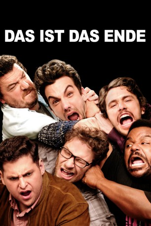

Alternativ: End of the World, The
 
 IMDB-Wertung: 6.6 / 10
IMDB-Wertung: 6.6 / 10  Metascore:
Metascore: 
Während einer Party im Haus von James Franco müssen Jay Baruchel, Seth Rogen und einige andere Berühmtheiten feststellen, dass draußen seltsame Dinge vor sich gehen, wie zum Beispiel unerklärliche Erdrutsche und Feuerwände, die durch die Gegend walzen. Der Großteil der Partygäste entschließt sich dazu, panisch zu flüchten, während sechs Freunde beschließen, sich in Francos Haus zu verbarrikadieren. Bald jedoch sinkt die Stimmung bei ihnen ins Bodenlose, denn die Vorräte schwinden, alle benehmen sich völlig daneben und plötzlich taucht auch noch Emma Watson auf. Vor der Tür häufen sich schließlich die merkwürdigen Vorfälle und drinnen ist die Gemütslage alsbald ähnlich apokalyptisch. Schließlich beschließen James Franco und Co., das Haus zu verlassen und sich dem vermeintlichen Weltuntergang zu stellen - ganz nebenbei erkennen sie den wahren Wert von Freundschaft.
Jahr: 2013
Dauer: 99 Minuten
FSK: 16
Land: USA Studio: Columbia Pictures CorporationTonspuren:
Untertitel:
Auflösung: 1080p (1920x1080) Größe: 7106 MB
Regisseur: Evan Goldberg,  Seth Rogen
Seth Rogen
Drehbuch: Seth Rogen, Evan Goldberg, Seth Rogen, Evan Goldberg, Seth Rogen
Soundtrack: Henry Jackman
Darsteller:
 Christopher Mintz-Plasse als Christopher Mintz-Plasse
Christopher Mintz-Plasse als Christopher Mintz-Plasse Channing Tatum als Channing Tatum
Channing Tatum als Channing Tatum Aziz Ansari als Aziz Ansari
Aziz Ansari als Aziz Ansari Douglas M. Griffin als Father in Store
Douglas M. Griffin als Father in StoreDatei: X:\2013(A-F)\Das ist das Ende (2013, FSK16, 1920x1080) 3D.mkv seit 28.11.2018
Festplatte: HD 2012(N-Z)-2013(A-H)
 Es gibt insgesamt 127 Filme in der Gruppe '2013(A-F)'
Es gibt insgesamt 127 Filme in der Gruppe '2013(A-F)'